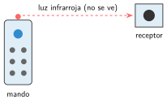
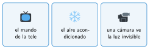

Infrarrojos y Bluetooth
🤔 Pienso5 min
Qué hago aquí: Piensa un momento y contesta con lo que ya sabes. No pasa nada si no lo sabes: es para empezar.
Apunta un mando a la cámara de un móvil y pulsa un botón. ¿Qué ves en la pantalla que no ves con tus ojos?
📖 Leo y aprendo15 min
Qué hago aquí: Lee despacio, mira los dibujos y los ejemplos, y quédate con la idea clave del final.


Con la Micro:Bit, el receptor se conecta al Nezha (por ejemplo, en J1) y se añade su extensión.
| Medio | Alcance | Para qué |
|---|---|---|
| Cable (serie) | lo que mida el cable | Datos al ordenador |
| Radio | unos 20 m | Placa con placa |
| Infrarrojos | unos 5 m, apuntando | Mando a distancia |
| Bluetooth | unos 10 m | Placa con móvil |
✏️ Hago25 min
Qué hago aquí: Haz las actividades en orden. Empieza siempre por las básicas.
Une cada medio con su uso.
| Radio • | • Mando de la tele |
| Infrarrojos • | • Placa con móvil |
| Bluetooth • | • Datos al ordenador |
| Cable • | • Placa con placa |
¿Por qué el mando de la tele no funciona desde otra habitación?
Conecta el receptor. Muestra en la pantalla el código de cada botón. Apunta los de las flechas.
| Arriba | Abajo | Izquierda | Derecha |
|---|---|---|---|
Empareja la Micro:Bit con la app del móvil o la tableta. Pásale el programa del dado.
¿Qué medio eliges? a) Dos robots que juegan al fútbol. b) Guardar los datos de un experimento. c) Manejar el robot desde el móvil. Explica por qué.
✏️ Puedes responder escribiendo, con un dibujo o un esquema, o contándolo en voz alta.
🚀 Amplío (si quieres saber más)
Qué hago aquí: ¿Has terminado? Lee la curiosidad o elige el reto. Es voluntario.
Mando de infrarrojos para el Nezha: flecha arriba, los dos motores adelante; flecha abajo, atrás; OK, parados. Escribe los bloques.
✅ Compruebo5 min
Qué hago aquí: Contesta sin mirar la ficha y marca cómo lo llevas.